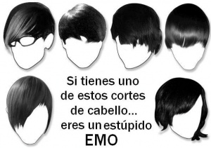
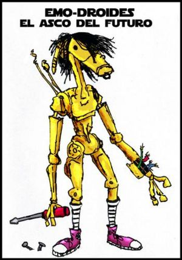

Emo
 De: La Frikipedia, la enciclopedia extremadamente seria.
De: La Frikipedia, la enciclopedia extremadamente seria.
| De la serie tribus urbanas del mundo:
|
| Emo
|
Ejemplo de la tribu

|
| ¿Es un hombre o una mujer?
|
|
| Hábitat
|
Parques a la media noche y lugares con poca luz, véase: Emolandia
|
| Inteligencia
|
Mucha, o al menos eso piensan ellos
|
| Frase favorita
|
La vida es una mierda
|
| ¿Peligroso?
|
Para ellos mismos
|
| Obsesión
|
Cortarse, llorar y para variar, suicidarse
|
| Notas
|
No hay mucha diferencia entre el género masculino y el femenino en esta especie
|
Posible aplicación de los emos
 Diversos cortes de
venas cabello emo

Este emo se rie de ti por tu fea cara
¿Cúal es cual?: ¿No notas la diferencia?, pues si tratas de evitar la imagen cliche (foto tomada desde el angulo lateral y superior) entonces tal vez podrás averiguar cual de estos ejemplares es el macho
¡Nada como un buen consejo en épocas de crisis!
«Mi vida es una espiral descendente. »
~ Emo acerca de una espiral descendente su vida.
«Si no me dan dinero, me cortaré las venas. »
~ Emo pidiendo dinero gentilmente a sus padres
«¡En serio!, ¡esta vez sí me cortaré las venas!. »
~ Emo reafirmando su palabra.
«¡Ah!, ¡¿conque no me creen?!, ¡pues miren!. »
~ Emo sosteniendo una cuchara.
«¡Auxilio!, ¡un médico!, ¡un médico!, ¡llévenme a un médico!»
~ Emo luego de rozar la cuchara por sus venas, inrritándole la piel y causándole ardor.
«En este mundo hay mucha gente sufriendo, por eso, me cortaré las venas.»
~ Emo acerca la globalización.
«No hay papel de baño... que más da, me cortaré las venas. »
~ Emo sentado en el inodoro.
«Me corto, luego existo soy emo. »
~ Filosofía emo.
«Ser Emo es un pretexto para ser Homosexual.»
~ Algo evidente acerca de los emos
«Borraré este artículo y/o pondré un mensaje estúpido mi opinión (o intento de insulto). »
~ Emo al leer este artículo.
«No me importa lo que la gente piense de mi... por eso me visto como marica androgino para que todos NOTEN lo mucho que no me importa lo que opinen de mi.»
~ Filosofía emo.
«Los emos con son analfatebas analfabetas»
~ Filosofía emo.
Emo isectus rastrerus golpeablus, se agrupan para ser golpeados, fácilmente reconocibles por la greña que les tapa un ojo (a diferencia del Grunge que le maquillaje que tu novia, y si no eres hombre o tortillera, más que tu mamá, su tema favorito es el suicidio y como sus padres tienen tan buena onda que les compran y les dejan ser lo que quieren, les arruinan la vida "junto con la sociedad que no los comprende", se la pasan escuchando Panda, El sexto sello o cualquier banda que hable de como sus novias, la sociedad o su familia los aleja del mundo con letras estupidas y música “Punk”. Los puedes encontrar fácilmente en los lugares oscuros y menos tenebrosos que encuentres, o donde haya maquinitas de pump. Si los ves solos o en grupos golpéalos. Si crees que son mucho para una sola persona, llama a algunos amigos. Si te cansas de golpearlos descansa, no te preocupes, no irán a ningún lado.
Los emos basan su vida en dejarse el brazo como el culo de un Mandril ( Azul) por que su novia/padre/novio imaginario les ha echo daño...la unica solución para ellos es hacerse más daño...
Principales Mandamientos de un emo
- Amarás a tus grupos emo-Pijos que no conoce ni su BUENA MADRE ,( por que son todos unos hijos de Madre) sobre todas las cosas, más que a ti mismo por supuesto.
- El emo al que le tocaba escribir este mandamiento murió por causa desconocida..lo unico que se encontro en el baño del supuesto emo era un cuchillo de untar mantequilla, un cuerpo raquitico y deforme ( un emo) y mucha sangre...
- Llorarás todos los dias por Razones que hasta tu mismo desconoces ( Normalmente la razón esque los emos son unos pichacorta)
- Honrarás a tus dioses los Jebis ( ya que son señores y amos del mundo comparados contigo)
- Te matarás
- Solo cometerás actos impuros con seres de tu mismo sexo
- Este emo también murió por las mismas causas nombradas en el mandamiento número 2.
- Parece que este también (Dios, pobres... muhahahahahaha)
- Consentirás pensamientos y deseos impuros hacia ti o ser de tu mismo sexo.
- Serás un niñato pijo que piensa que no hace daño a nadie, pero que realmente no se da cuenta de que su brazo sangra y que....
- No entrarás al slam porque te puede lastimar alguien mas y no tu mismo.
- Soñarás con el pijo de chemical romance(o con el de panic a la dico).
- Manipularás a tus padres para pedirles dinero.
El emo del mandamiento 10 murió desangrado..
Subnormal-emo
Clase de subnormal-emo, cuidado con ellos, si miras con detenimiento se convertirá en un
Latin King.
O simplemente emo, estos se diferencian de los demás por que suelen ser estúpidos
y hasta los diecisiete años no se enteran de lo que es un emo, pero a ellos les mola,
mayormente para intentar destacar entre los demás y sus estúpidos "amigos" (si los tienen),
ya que estos, al no tener simplemente clase social se llaman emos porque les parece muy guay.
Cabe destacar que a nivel emo son mediocres, ya que creen que emo es una forma de vestir,
y son tan estúpidos que no distinguen a un gótico, de un punk o de un cani. Suelen intentar
demostrar que son emos deprimiéndose pero al no conseguirlo simplemente pintarrajean cosas
y ponen "Paco emo, ¿por que emo?,por que no.", aunque lo mas común es que marquen cosas que
se vean mucho: su ropa, carteles y/o sus propias maletas del colegio. Cuando se dan cuenta que
nadie les hace caso se vuelven a transformar en cani, que son aun peores. No valen la
pena como personas, así que como emo mucho menos, la verdad es que hasta que no hablas con
ellos parecen emos... ¿¿normales???, bueno emos. Además son seres extraños cuya única finalidad es "joder el casquete polar".
Sus madres son unicéfalas y cranoencefalicamente hablando son "Buenos dias".
Sus propiedades son
Ejemplo de fauna terrestre emo
Ejemplo de fauna marina emo

Chico emo despidiéndose de su mejor amiga antes de cortarse
Instrucciones en un brazo emo. (Incluídas al nacer, suele determinar si el/la bebe sale emo.)
Transformación de una chica en emogirl
- Ambicionan el conocimiento friki, pero carecen de forma alguna de retenerlo.
- Quedan embaucados por todo aquello que sea moderno.
- Protocolos de combinación de vestimenta propio de personas afectadas por el daltonismo.
- Vocabulario pijo.
- La mejor película del mundo es "El Cuervo", y el mejor director "Tim Burton".
- Llevan chapitas de "Pesadilla Antes de Navidad" (¡Si, esa que se estrenó hace como diez años!).
- Predicar el comunismo vistiendo con ropas de 300€ o más.(zapatillas marca Vans y Converse, un extendido ejemplo).
- Fumar "aliñao", (porros es una palabra fea).
- Nick del mésenller: ^┼AngelicFruitCake┼^ (Frase pastelosa de chico sensible en inglés) (8) (Canción triste y enteramente homosexual).
- Tendencia a usar bordados con forma de estrellita de colores de dudosa tendencia sexual (con puntas redondas, no se vayan a cortar ^^U, y caritas felices).
- Usan usualmente un cinturón de un color cuyas caracteristicas incluyen una luminosidad y/o saturación superiores en un 73,4% a la dosis recomendada para un ojo saludable.
- Constantemente recuerdan momentos míticos de series de televisión de los 80/90, así como se descojonan con teorías científicas sobre mitos de su infancia vistos en internet.
- Suelen sacar un cigarro o liarse un porro en el momento que ven a una persona del sexo opuesto a una distancia mínima para que pueda diferenciar que esta fumando y es mayor.
- Masturbarse con los dibujos de Victoria Francés (tanto con las pseudoelfas góticas como con los vampiritos. No hay que olvidar que el componente andrógeno de los gafapastas/emos no siempre es una pose).
- Son maricas
- Suelen llevar ropa de rayas, puntos y/o a rombos, principalmente de color negro, blanco y rosa.
- Se emborrachan con un sólo cubata.
- Cada fin de semana han sufrido uno o varios comas etílicos.
- Son maricas
- Los chicos suelen usar la ropa y perfume de sus amigas, y suelen ser igual o más femeninos que ellas.
- Si ves a alguien al que te entran ganas de pegar, seguro que es emo y si no, lo será en el futuro.
- Les gusta el rosado.
- Son maricas
- Lloran (mucho).
- Se quejan.
- Se maquillan.
- Le toman fotos a su cabello.
- Se alisan el pelo.
- Son más vanidosos que una quinceañera.
- Creen que están a la moda.
- Hablan como retrasados mentales.
- Son suicidas.
- ..Por lo tanto son maricas
- Se pintan las uñas de negro.
- Adoran las calaveras.
- Se cortan las venas.
- Son muy sensibles.
- Todo les afecta.
- No pueden vivir sin los espejos.
- Se depilan.
- Se bañan todos los días
- Son femeninos
- Usan delineador
- Besan a sus amigos
- Son miedosos
- Son anoréxicos
- Usan brillo para labios
- Lo peor que les puede pasar es tener el cabello ondulado
- Se ponen medias en los brazos
- Hasta tu hermanita los manda a volar
- Usan prendas de vestir de color rosado o algún color femenino
- Todos tienen un iPod (El mini rosado es su favorito)
- Lo mejor que les a pasado es MySpace
- La enfermedad que suelen padecer son las emorroides
- Todos usan un molde para el pelo, que todos comparten y usan, y es ley sagrada emo no lavar nunca el molde.
De repente y sin venir a cuento, se ponen de moda los pañuelos de la guerra palestinos, Pesadilla Antes de Navidad, las chapas y algunas otras cosas.
- Música: pop-rock o punk-pop (rock pijo: Simple Plan, etc..)
- Sentirse repentinamente homo o bisexual.
- Autofotografiarse su cara desde cerquita miles de veces.
- Afán por las cuchillas de afeitar.
Entonces ya reconocemos al sujeto, siguiendo el canon estético de las fotos de la derecha. Podemos destacar:
- Semblante triste por defecto.
- Peinado modelo lametón-de-vaca o pelo de lado a lo pijo. Hay ciertas variantes de emo en que el flequillo adquiere un color "Lejía Conejo" muy característico.
- Ojos ocultos, no vaya a ser que se los vean.
Entre su filosofía de vida, podemos destacar:
- "Soy un incomprendido".
- "¿Por qué tuvo que dejarme?".
- "La vida es un tormento".
- "¡Déjame!"
- "D:
- "Cool!
- "esta vez lo hare no lo dudeis, lo hare.. mejor no ya no estoy enfadado.
- "Mi vida no tiene sentido... me cortare las venas...
Aunque su vestimenta es característica tirando a hortera, no llegan a dañar la vista (la mayoría de las veces) y suelen ser inofensivos. Algunos "se hacen" los góticos, haciendo como que son oscuros, pero luego les da miedo la oscuridad.
Suelen encontrarse en cafés-club-budda-lounge-moods, intentando forzar conversaciones intelectuales.
Otras de sus costumbres al igual que los pijos es hacerse fotos haciendo el gilipollas.
Desgraciadamente, a pesar de todas sus amenazas de cortarse las venas, nunca cumplen su promesa por lo que cada vez hay mas jodidos m-emos y se multiplican de manera exponencial.
Música emo
 Por suerte no vivireis para ver esto.
Sueño erótico de un emo. (y ultimo deseo del emo del 10° Mandamiento.)

¿Quién dijo que los emos solo tienen una
opción?
La música emo es repetitiva y monótona, para tocar emo debes de:
- Usar palm muting, en especial para el coro
- Debe ser una bola de ruidos de acordes semidisonantes
- Las progresiones deben ser predecibles
- La voz nunca debe estar afinada con el resto de los instrumentos, es mas si sigue una linea y escala diferente, mejor
- El bajo nunca debe distinguirse
- Las letras deben de hablar de que tu novia te dejo y la quieres matar pero no tienes los .... o de que quieres ser alguien más.
Ejemplo de una canción emo
La canción emo

|
Querido diario:
Estado de ánimo: apático
Mi vida cae en una espiral sin fin. No pude conseguir suficiente dinero para ir al concierto de
Blood Red Romance y Suffocate me. Esto apesta, tocaran algunas de mis canciones favoritas como “
Stab my Heat because i love you”, Rip Appart my soul, y por supuesto “Stabby rip stab stab. Y no ayuda el hecho de que no conseguí que mi pelo se viera como el del chico de esa banda.
Sabes, algunos días...
Soy un chico emo, nunca estoy conforme
Tampoco lo estarías si como yo fueras deforme
Me pinto las uñas y me pongo maquillaje
Soy tan emo que ya hasta pienso en depilarme
Nunca tengo problemas de verdad
Solo, que me gusta exagerar
Mis amigos parecen chicas, mis amigas parecen chicos
Porque el emo es peor que el travestismo.
Rebana mi garganta y corta mi aliento......soy un chico emo
No saltamos durante los conciertos......soy un chico emo
Soy dark (eso creo), sensible y con poca autoestima
Me visto como si fuera halloween todos los días
Por haber robado la mascara de mi hermana
Estoy castigado por toda una semana
Mis hobbys son lamentarme y escribir poesía
No puedo escuchar Insite sin soltar una lagrimita
Las chicas me batean, no es divertido
Ya tienen una novia y no quieren otra de mi tipo
Rebana mi garganta y corta mi aliento......soy un chico emo
No saltamos durante los conciertos......soy un chico emo
La permanente en mi pelo y uso uñas postizas.....soy un chico emo
Toco la guitarra y escribo cartas suicidas......soy un chico emo
Mi vida, es como, un abismo negro, tu sabes, es tan oscura. Y me esta sofocando. Me agarra y me exprime. Me exprime mas que un par de jeans de mi hermana pequeña…..que se me ven mejor a mi, por cierto.
Si me deprimo, corto mis venas en todas direcciones
Las canciones sobre ser rechazado me provocan erecciones
Escribo un diario y traigo gruesos lentes
Mi sangre es negra (por la nicotina) y lloro durante clases
Del gótico soy, una mala y barata imitación
Leo poesía mientras me hago la masturbación
Uso ropa ajustada y odio todo de mi vida
Si digo que me gustan las chicas seria mitad mentira.
Me veo como un muerto y me visto como un homosexual......soy un chico emo
Tire mi Xbox, mi viejo nintendo quiero jugar......soy un chico emo
Me gusta llorar y odiar a mis padres......soy un chico emo
Yo y todos mis amigos parecemos clones......soy un chico emo
Mis papás simplemente no me entienden. Tú sabes…. Piensan que soy gay solo porque me vieron besándome con un tipo. Bueno un par de tipos talvez. Quiero decir, ósea, es un nuevo milenio. ¿No pueden 2… o 4 amigos hacerlo unos con otros sin que eso signifique que son gay? Quiero decir, las chicas siempre hacen esa clase de cosas y nadie se mete con ellas, es completamente normal. No lo sé querido diario, a veces pienso que solo tú me entiendes de verdad, tú eres mi mejor amigo…
Me siento como tacos.
|

|
| Canción emo
|
Pasos para vestirte como un emo
emo for Dummies, imprescindible si quieres que tu hijo sea emo
- Entra al cuarto de tu hermana y robate unos cuantos pantalones y todo el maquillaje que puedas sin que ella se dé cuenta.
- Usa todo el gel necesario para hacer que tu cabello "caiga" de lado y acostumbrate a ser bizco.
- comprate unos converse. rompelos y ensucialos para aparentar desgaste. En su defecto, unas vans (antiguamente usadas por skaters) también valdrán. Son guays.
- Compra los pantalones, camisetas, chaquetas... más caros que veas, y rómpelos. ¿Como que por qué? !pues porque eres cool! y no se puede ser cool si no te pones ropa muy cara rota.
- Sigue a los demás como oveja de rebaño.
- Trata de llamar la atención.
- Si no lo consigues, amenaza con cortarte las venas para que así te hagan caso
¿Sabías que...
- Los campesinos de ranchos, (en especial los que crían vacas) inspiraron la moda del peinado emo STYLE junto con los pantalones cortos y apretados y el antitranspirante para animales?
- Cuando tu novia te corta (LOL?), automaticamente eres un emo?
- Ya es demasiado tarde para arrepentirte?...
- ...Antes de volverte gay(o más gay)ahora que eres Emo sería mejor que te suicides?...
- ...Aunque hagas eso igual por suicidarte moriras como un Emo?
- Los emos pasan el 78.43% del tiempo de un día mirándose al espejo y mal-maquillándose para que después de peinarse nadie los vea?
- Los pantalones apretados que usan los emos son causa de la estupidez de no quitarselos cuando los lavan se encojen y un par de años despues les da gangrena en las piernas?
- .. un emo llora después de hacerse una paja debido a la gran carga emocional que este hecho le desata?
- el penedector se pueden reproducir con cualquier hembra humana excepto con una emo, porque no los distingue de los machos?
- Y que habría de detectarles si la especie masculina(si es que existe)no tiene?
- Los emos están esperando a que aparezcan rascacielos en Ciudad Frikipedia, para poder tirarse desde sus azoteas?
Otros nombres
- Pagafantas
- Emo
- Hipijos
- Pijipis
- Bótikos
- Frikiflequilludo
- Macs
- Dark Gays
- Pokemones
- doraemon
- Hemorroides
- Emosexuales
- Emoticones
- Gotikillo
- Emofílico = Que colecciona emos
- Pijigóticos
- Emogoblinos
- Tontolasuñas
- Lady Ascarchofa
- Pab
- Emo = Estilo Marica Oculto
- Deficencia mental al peinarse
- Emololos
- Cabezas Languetaso
- Perecemos
- Fenecemos
- Flequillo-lametazo
- Astrogóticos
- Emomon.
- Gay
- sasuke
No confundir con
Galería de imágenes
¡Con todos ustedes el Champú emo, ideal para melenudos, y si no le gusta, que te lama una vaca!
Emo VS. Realidad histórica.
Vans, marca que les encanta a los emos...bueno, eso, y cortarse las venas.
¡Tenía que ser!... la verdad es que no sorprende a nadie sorprende.
Ver también
Enlaces externos
| Tribus Urbanas
|
 Universales Universales
 Españolas Españolas
 Argentinas Argentinas
 Chilenas Chilenas
 Colombianas Colombianas
 Mexicanas Mexicanas
 Peruanas Peruanas
 Venezolanas Venezolanas
|
Autor(es):
- Krusher
- Nexo
- Juantxorena
- BloodyFountain
- Chrysanthus
- Jocicuo
- Saiko
- Sensoker
- SITORELOADED
- NaTTi
Frikipedia 2005-2016, Licencia
GFDL 1.2 - Extraído por FrikiLeaks